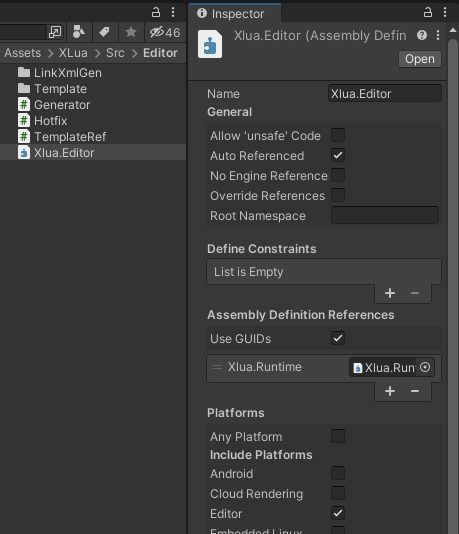
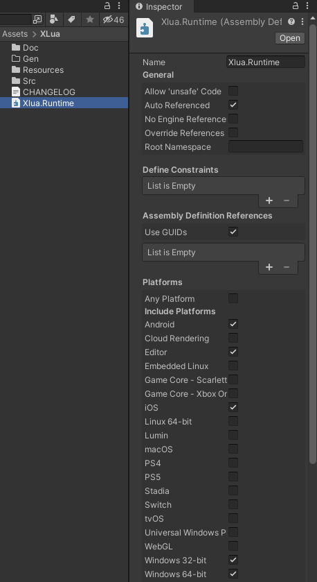
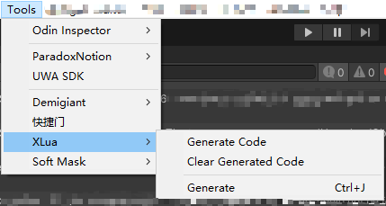

0x00
工程中有不少需要代码渲染的功能，需要通过编辑器菜单一键生成代码文件来保证在主工程报错的情况下，编辑器工具仍然可以使用。
可以通过合理定义程序集来保证这一点。
0x01
参考：
0x02
编译顺序无关紧要，关键是对程序集的依赖关系，会导致工具无法使用。
比如在VS中编译大型工程项目时，项目中包含了多个工程dll，编译顺序需要符合依赖关系即可，对于不存在依赖的工程dll，谁前谁后并不会因为报错影响后续工程的编译行为。
0x03
原则：逻辑全部在主工程Assembly-CSharp中（或其他依赖Assembly-CSharp的程序集），外围工具集以及底层代码只会被主工程单向引用。


